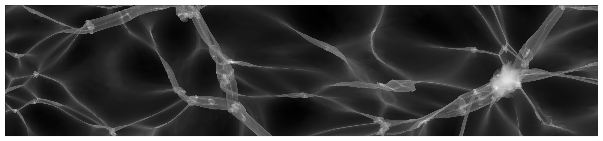

Phase-Space DTFE
Documentation for PhaseSpaceDTFE.

The density, velocity and number-of-streams fields of a three-dimensional $N$-body simulation are estimated with the Phase-Space Delaunay Tessellation Field Estimator (PS-DTFE). This code accompanies the publication Phase-Space Delaunay Tessellation Field Estimator.
Installation
The PhaseSpaceDTFE package can be installed with the Julia package manager. From the Julia REPL, type ] to enter the Pkg REPL mode and run:
pkg> add PhaseSpaceDTFEOr, equivalently, via the Pkg API:
julia> import Pkg; Pkg.add("PhaseSpaceDTFE")Usage
Given the initial (coords_q) and final (coords_x) particle positions and the velocities vels of an $N$-body simulation in a periodic box of size L with Ni³ particles, we estimate the density, velocity and number-of-streams fields as follows:
using PhaseSpaceDTFE
m = 1. # particle mass, or a vector with the mass of every particle
sim_box = SimBox(L, Ni)
ps_dtfe = PS_DTFE(coords_q, coords_x, vels, m, sim_box)
density([x, y, z], ps_dtfe) # density at a point, summed over the streams
numberOfStreams([x, y, z], ps_dtfe)
velocity([x, y, z], ps_dtfe) # one row per stream
velocitySum([x, y, z], ps_dtfe) # stream-density weighted mean velocity
xs = range(0, L, length = 257)
density_field = density_grid(xs, xs, xs, ps_dtfe) # array indexed [ix, iy, iz]
nstreams_field = numberOfStreams_grid(xs, xs, xs, ps_dtfe)
density_field, nstreams_field = ps_dtfe_grid(coords_q, coords_x, m, sim_box, xs, xs, xs) # without storing an estimatorStart Julia with several threads (julia -t auto) to compute grids in parallel. Please have a look at the Tutorial for more details.
What is new in version 2
Version 2 is a rewrite of the estimator:
- Tessellations. The periodic Delaunay tessellation of the initial positions (
tessellation = :delaunay, default) works for lattice, glass and other initial conditions. For lattice initial conditions, the Kuhn split of the particle lattice (tessellation = :kuhn) gives every particle the same star of 24 tetrahedra. - Vertex densities. Besides the classical DTFE estimate (
vertex_density = :mass), the Lagrangian estimate (vertex_density = :lagrangian) is exact for a uniform initial density, also for irregular tessellations and zoom simulations with particles of different mass. - Periodic boundaries. Every tetrahedron is unwrapped across the box on its own, so particles may travel around the box any number of times.
- Non-periodic estimator.
PS_DTFE(...; periodicity = :nonperiodic)estimates the fields without periodic boundary conditions. - Point location. A uniform cell index with the precomputed inverse edge matrix of every tetrahedron replaces the bounding volume hierarchy. Point queries do not allocate.
- Grids.
density_grid,numberOfStreams_gridandps_dtfe_gridevaluate the fields on regular grids by rasterising the tetrahedra.ps_dtfe_gridreplaces the sub-box estimators of version 1 for simulations whose estimator does not fit in memory.
On the 64³ test simulation (test/data), compared with version 1:
| v1 | v2 | |
|---|---|---|
| construction | 20–70 s | 3–8 s |
| point query (random points) | 820–890 µs | 14 µs with G = Ni (283 MB); 5.7 µs with G = 2Ni (573 MB) |
| 257² slice | 126 s | 0.56 s |
| 257³ grid | ≈ 4 h by point queries (estimated) | 2.7 s (8 threads); 3.7 s without an estimator |
See Migrating from version 1 for the changes to the interface.
Contributors
This code was written by:
- Job Feldbrugge (job.feldbrugge@ed.ac.uk)
- Benjamin Hertzsch (benjamin.hertzsch@ed.ac.uk)
We thank:
- Bram Alferink